Preference-charts
First taste of the voting preferences for everyone!
An arrow A -> B indicates that person A votes for person B according to the following scale (low voting is on the left, high voting is on the right b/c yellow is the best):
Adam:
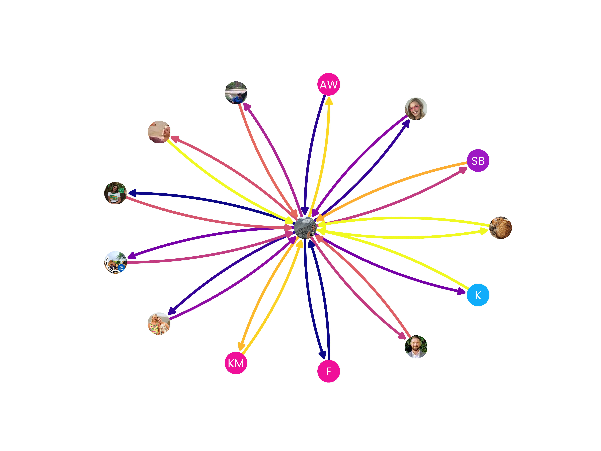
The people Adam downvoted the most:
- Ashley (5 times)
- Hannah (4 times)
- Eleni (3 times)
(Sexist?)
Andrew Watt:
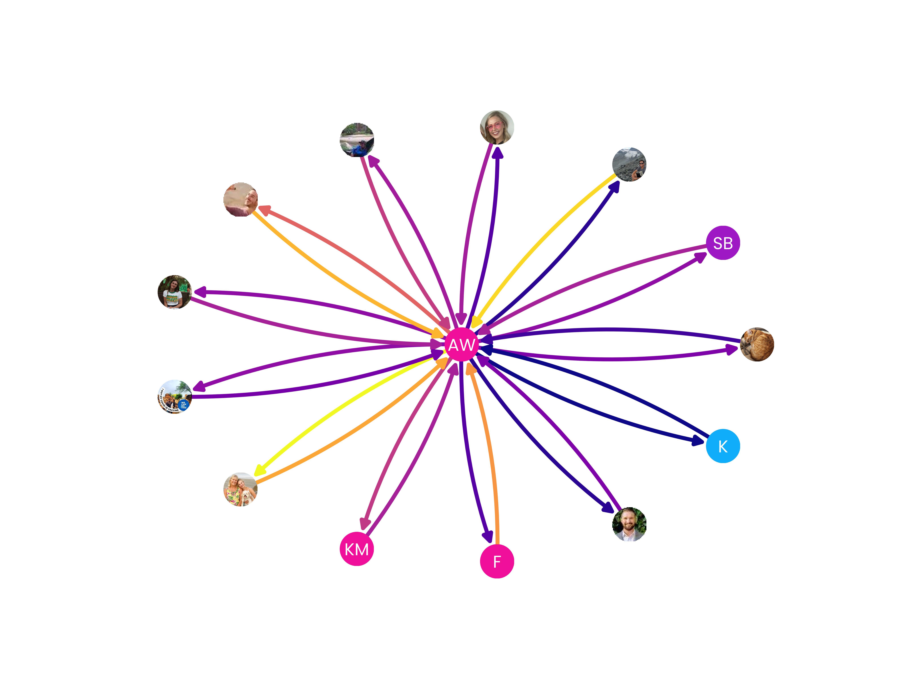
The people Andy downvoted the most:
- Ashley (4 times)
- Adam (3 times)
- Steven (2 times) ((Dick!))
Wilk:
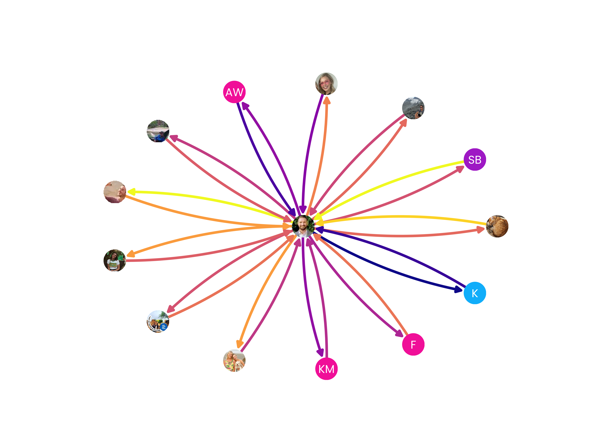
The people Wilk downvoted the most:
- Samuel basic (3 times)
- George Harrison (3 times)
- Kayla Marie (3 times)
Ashley:
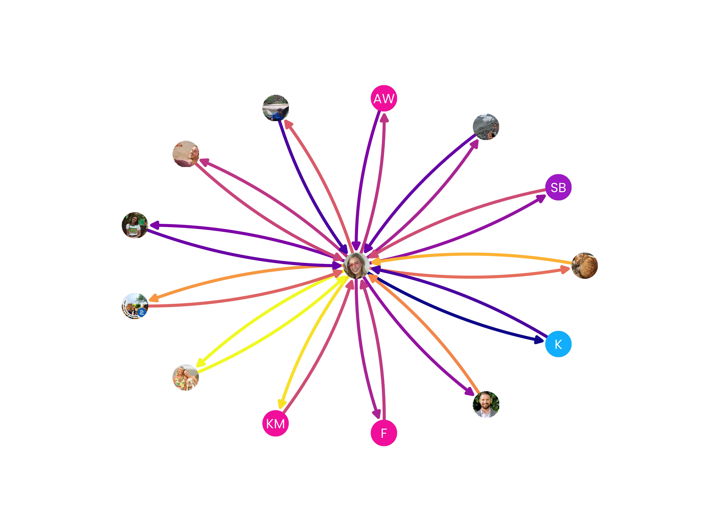
The people Ashley downvoted the most:
- Eleni Murphy (3 times)
- Katie (3 times)
- Samuel basic (2 times)
Chelsea:
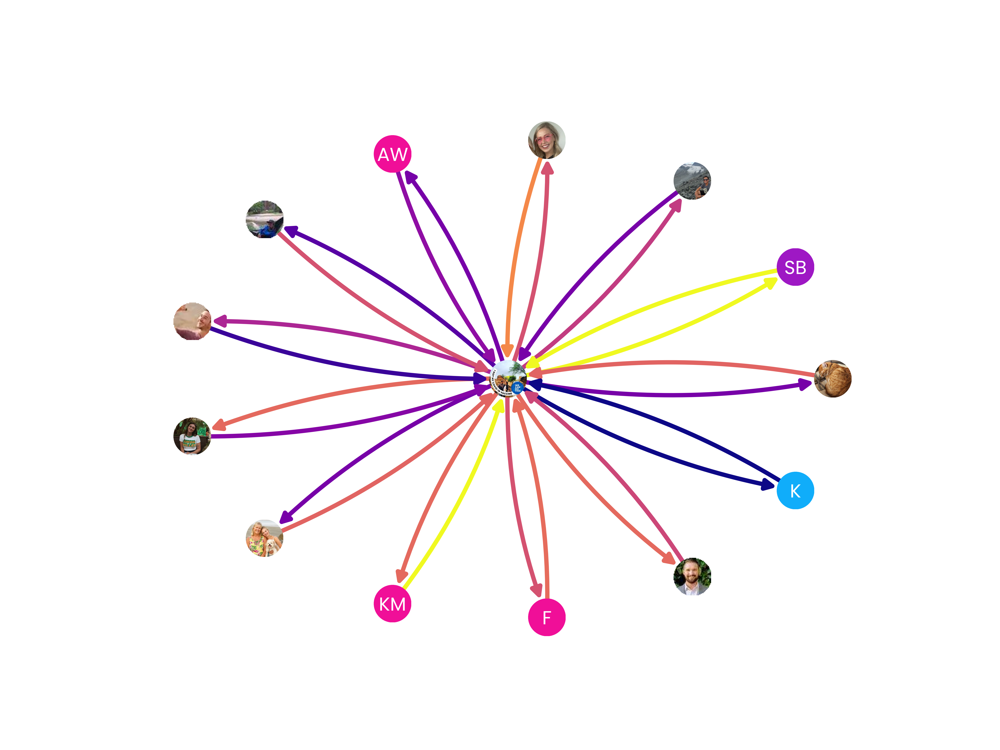
The people Chelsea downvoted the most:
- George Harrison (5 times)
- Ashley Berset (3 times)
- Alex Glennon (2 times) ((barely counts but w/e))
Eleni:
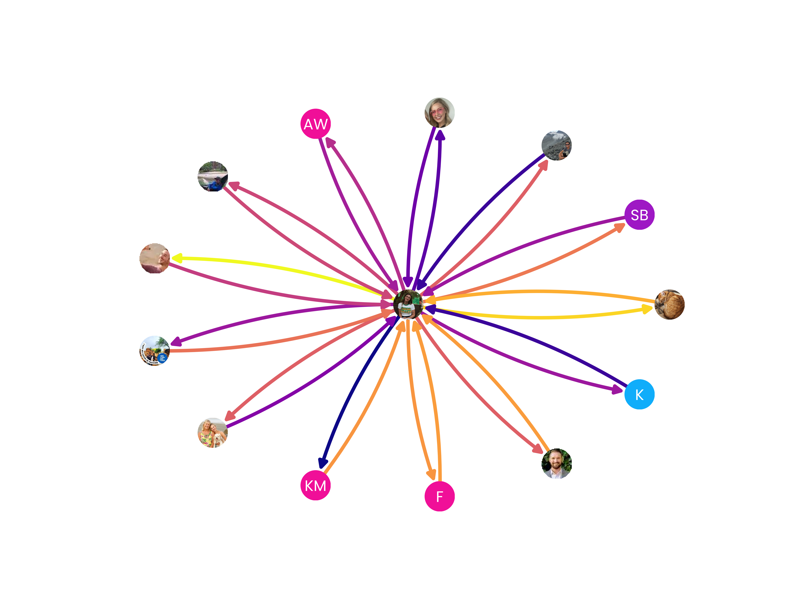
The people Eleni downvoted the most:
- Ashley Berset (5 times)
- Kayla Marie (3 times)
- Andrew Wilkinson (3 times)
Katie:
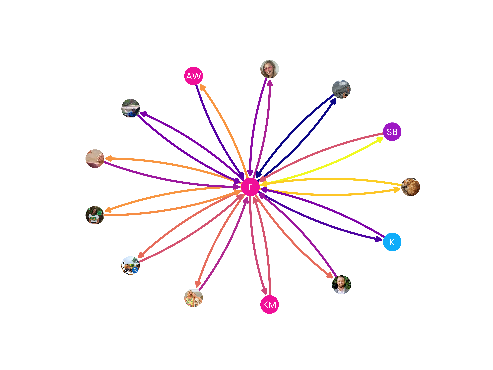
The people Katie downvoted the most:
- Ashley Berset (4 times)
- Samuel basic (2 times)
- George Harrison (2 times)
George (Gus):
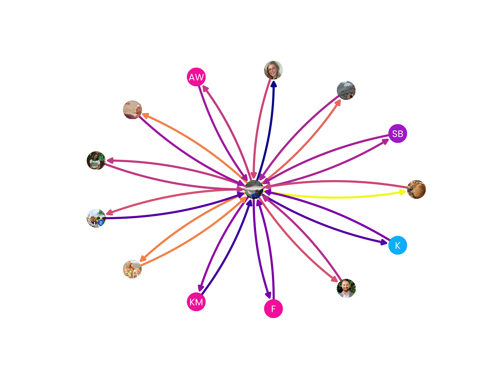 The people George Harrison downvoted the most:
- Andrew Wilkinson (3 times)
- Alex Glennon (2 times)
- Adam Burger (2 times)
Fun fact: Gus and I have the same birthday!! August 22, last day of leo szn, RAWR!
Hannah:
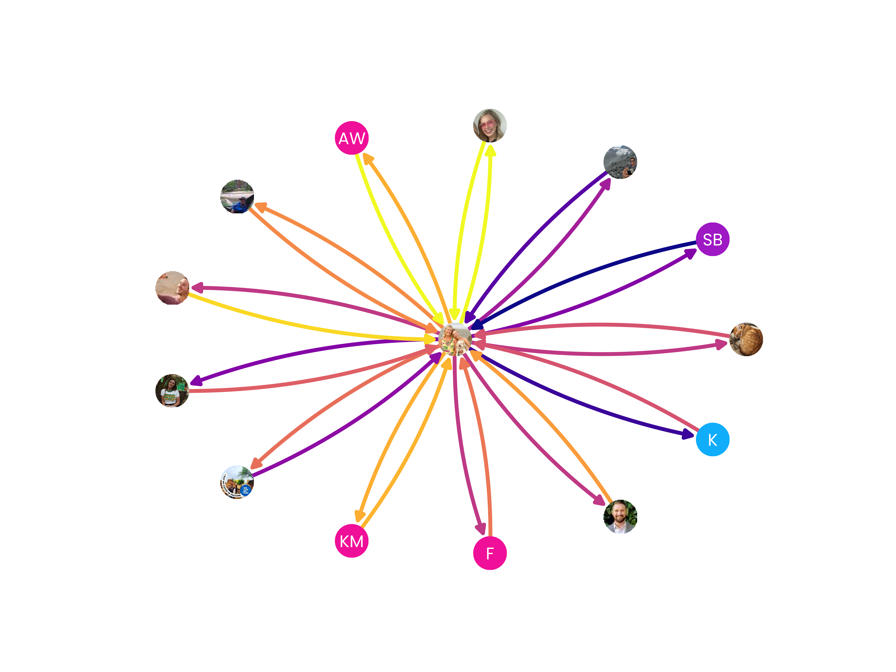 The people Hannah Rose downvoted the most:
- Samuel basic (2 times)
- Eleni Murphy (2 times)
- Steven (1 times)
Kayla:
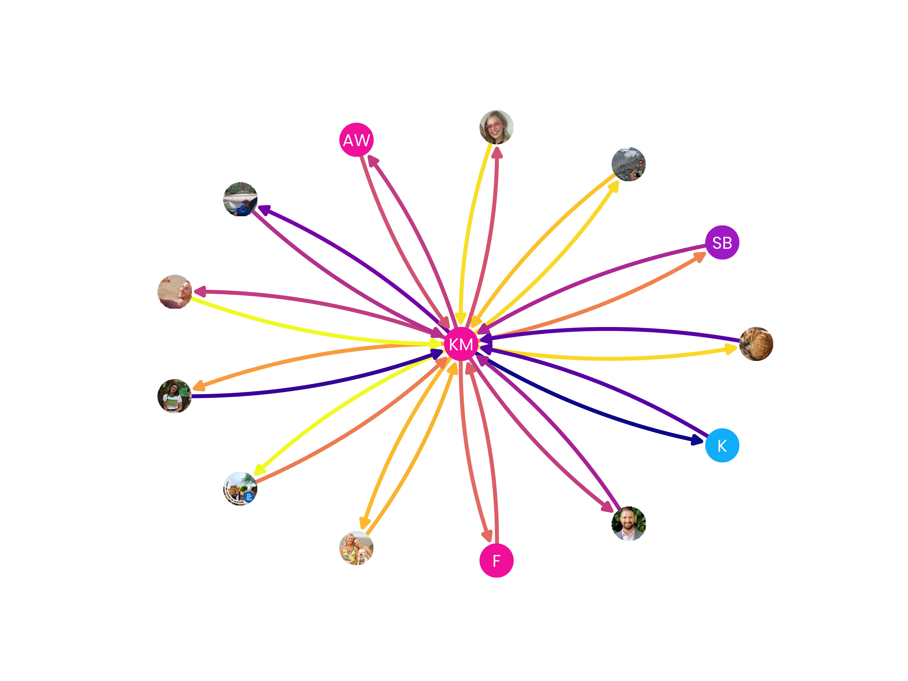 The people Kayla Marie downvoted the most:
- Ashley Berset (4 times)
- Andrew Watt (2 times)
- Chelsea Kline (2 times)
Kevin:
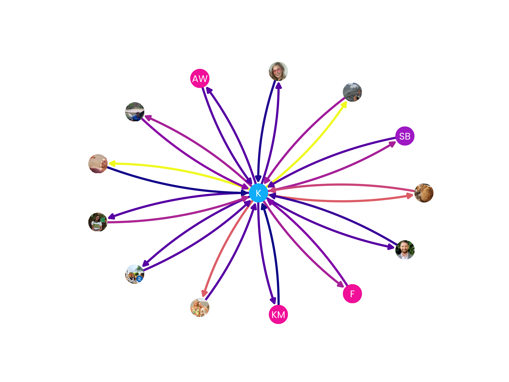 Kev has yet to participate in a downvote round! Truly a lover.
Sam:
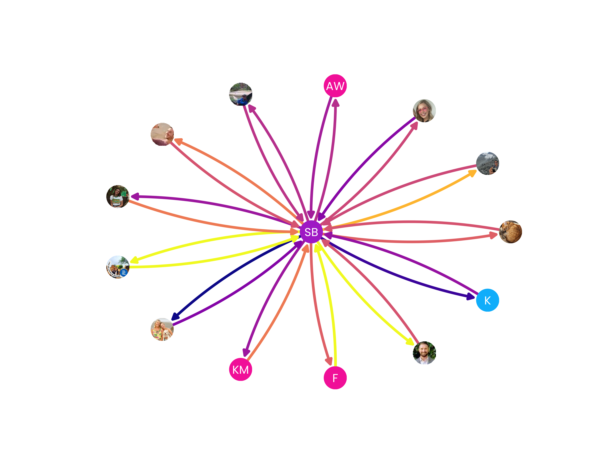 The people Samuel basic downvoted the most:
- Hannah Rose (4 times)
- Eleni Murphy (3 times)
- Andrew Watt (2 times)
Steven:
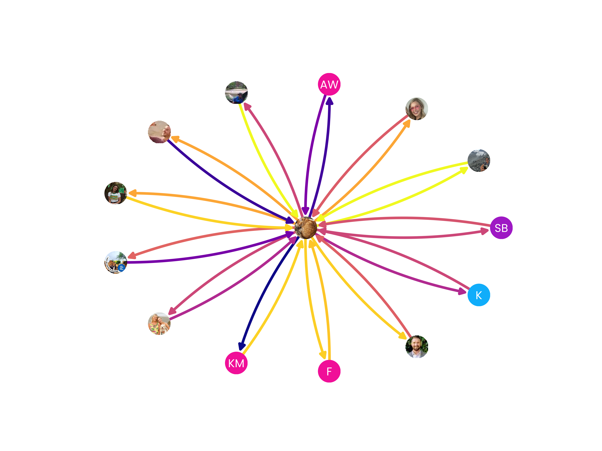 The people Steven downvoted the most:
- Kayla Marie (4 times)
- Andrew Watt (3 times)
- Hannah Rose (3 times)
Apparently I am not a fan of the Watt couple? I find that hard to believe.
Tyler:
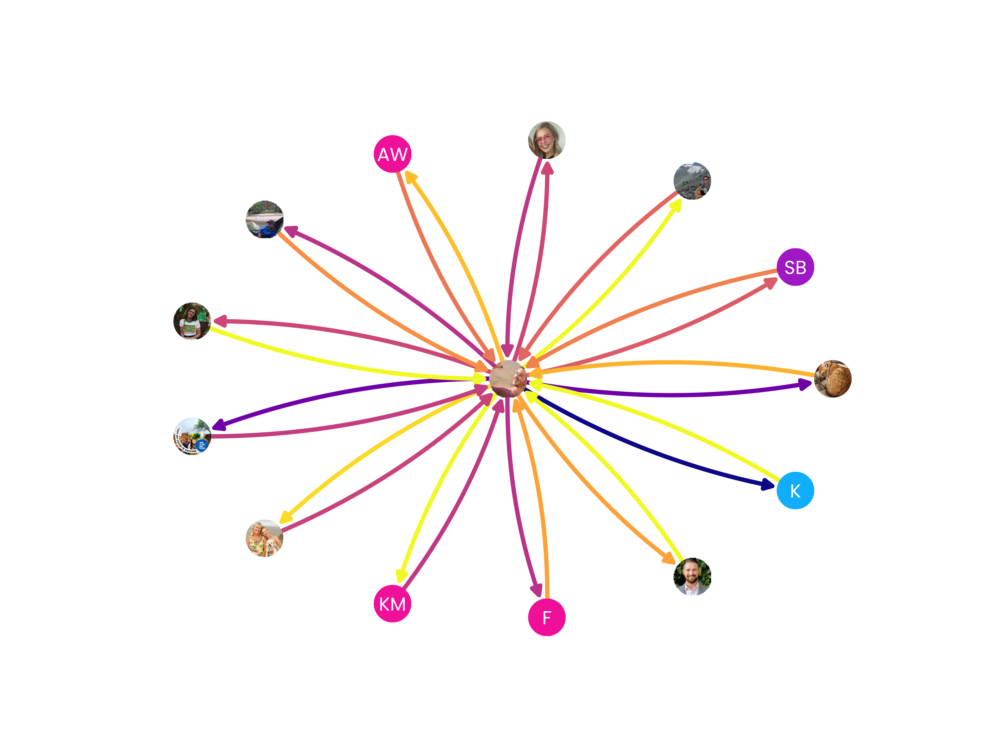 The people Tyler John downvoted the most:
- Steven (3 times) ((Dick!))
- kyvin (3 times)
- Samuel basic (2 times)